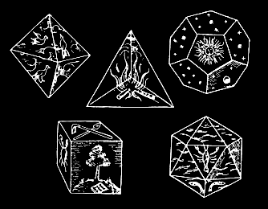

גופים אפלטוניים הם עצמים תלת-ממדיים שכל פאותיהם עשויים משולשים, מרובעים או מחומשים משוכללים. גופים אלה אינם מצטלבים עם עצמם ובכל קדקוד נפגש אותו מספר מצולעים (שכולם מאותו סוג). כבר לפני יותר מ-2000 שנה הוכיח אוקלידס שקיימים בדיוק חמישה גופים המקיימים תכונות אלה.
בחלון שמימין תוכלו תוכלו לצפות בגופים אלה וכן לקפל או לפרוש אותם למערך של מצולעים משוכללים.
רוצים להמשיך לחקור? הסברים נוספים על סימטריות, עיטורים וגופים אפלטוניים תוכלו למצוא באפליקציה iOrnament הזמינה להורדה עבור iPhone ו-iPad.
קישור: www.science-to-touch.com/iOrnament
|  |
בימי קדם התקיימה סברה כי חמשת הגופים האפלטוניים קשורים קשר הדוק
ליסודות מים, אש, אוויר, אדמה והקוסמוס.